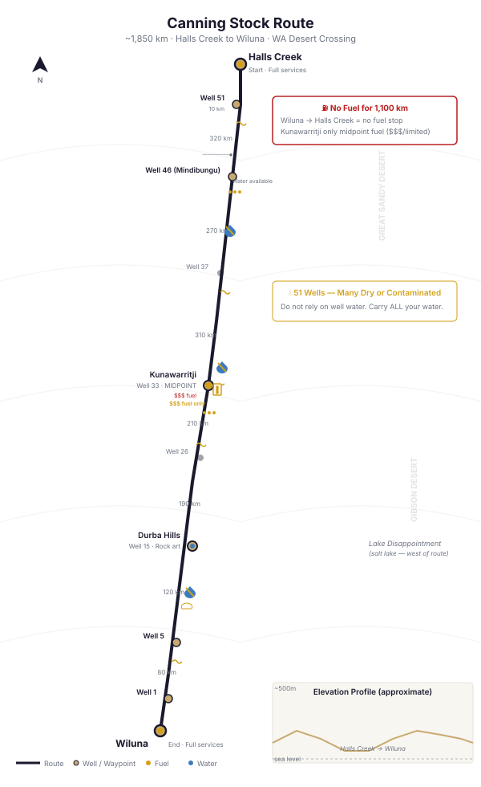

📑 Contents
Canning Stock Route — Map & Track Reference

Canning Stock Route — well sites, fuel stops, and key distances (approx. 1,850 km north-south)The Canning Stock Route (CSR) is widely considered the most challenging outback 4WD route in Australia. At 1,850 km from Halls Creek to Wiluna through the Great Sandy Desert, Gibson Desert, and Little Sandy Desert, this is not a track for beginners. It demands meticulous preparation, extreme self-sufficiency, and the physical and mental stamina for 12–18 days of isolation.
Built between 1908 and 1910 by surveyor Alfred Canning to drive cattle from the Kimberley to the goldfields, the route follows 51 wells numbered Well 1 (south, near Wiluna) to Well 51 (north, near Halls Creek).
Key Facts
| Attribute | Detail |
|---|---|
| Location | Western Australia (south: Wiluna, north: Halls Creek) |
| Distance | ~1,850 km |
| Terrain | Sand dunes, spinifex plains, rocky outcrops, mulga scrub |
| Typical duration | 12–18 days |
| Best season | May–August |
| Fuel stops | 2 (Wiluna and Kunawarritji) — fuel drop at Well 23 common |
| Mobile reception | Zero across entire length |
| Well sites | 51 (Well 1 to Well 51, south to north) |
| Original purpose | Stock route for cattle drives (1910–1950s) |
| Established | 1908–1910 by Alfred Canning |
History
The Canning Stock Route was surveyed and constructed by Alfred Canning's party from 1908 to 1910, sinking wells at roughly 30 km intervals to provide water for cattle being driven from the eastern Kimberley to the goldfields around Wiluna and Kalgoorlie.
- 1910–1950s: Active stock route — thousands of cattle walked the route
- 1950s–1970s: Fell into disuse as road transport replaced stock driving
- 1980s: Rediscovered by 4WD tour operators as a remote adventure route
- 2000s onwards: Gained popularity but remains the hardest desert crossing in Australia
- Present: Requires DBCA permit, attracts ~500 vehicles per year (peak)
Well Layout (Selected Key Wells)
Wells are numbered Well 1 (south) to Well 51 (north). Not all are functional or safe.
| Well | Distance from Wiluna | Condition | Notes |
|---|---|---|---|
| Well 1 | ~10 km | Dry/ruin | Southern start marker |
| Well 5 | ~130 km | Good | Carnegie Station area. Water available. |
| Well 12 | ~350 km | Variable | Kunawarritji Community access |
| Well 15 (Durba Hills) | ~480 km | Good | Aboriginal community. Art on walls. Water. |
| Well 23 (Kaluwara) | ~700 km | Variable | Common fuel drop point |
| Well 33 (Kunawarritji) | ~870 km | Good | Only fuel stop on the CSR. Community. |
| Well 37 | ~1,050 km | Variable | |
| Well 40 | ~1,200 km | Poor | |
| Well 46 (Mindibungu) | ~1,530 km | Good | Community. Water available. |
| Well 51 | ~1,840 km | Good | Northern end, near Billiluna. |
Key Waypoints
| Waypoint | Coordinates (WGS84) | Notes |
|---|---|---|
| Wiluna | 26°35'00"S, 120°13'00"E | Southern start. Fuel, supplies. |
| Carnegie Station | 25°42'00"S, 122°59'00"E | Working station. Fuel (expensive, call ahead). |
| Well 15 (Durba Hills) | 24°38'00"S, 123°29'00"E | Hills, caves with Indigenous rock art. |
| Kunawarritji (Well 33) | 23°38'00"S, 124°27'00"E | Fuel, limited supplies. MIDPOINT. |
| Godfreys Tank | 21°54'00"S, 126°34'00"E | Water. Windmill. |
| Well 46 (Mindibungu) | 20°09'00"S, 127°49'00"E | Community. Water. |
| Billiluna | 19°38'00"S, 127°39'00"E | Aboriginal community. Fuel access limited. |
| Halls Creek | 18°13'00"S, 127°40'00"E | Northern end. Full services. |
Fuel
| Location | Distance from Wiluna | Fuel Type | Cost | Notes |
|---|---|---|---|---|
| Wiluna | 0 km | Diesel, ULP | Standard | Fill ALL containers. Last reliable before the CSR. |
| Carnegie Station | ~130 km | Diesel, ULP | Premium ($3+/L) | Call ahead. Limited hours. Remote station. |
| Kunawarritji (Well 33) | ~870 km | Diesel, ULP | $3–5/L | Only fuel stop on the CSR proper. Expensive. Check opening hours. Call ahead. |
| Well 23 fuel drop | ~700 km | Diesel, ULP | Your own | Common practice: pre-drop fuel at Well 23. Arrange with Kanyirninpa Jukurrpa or CSR tour operators. |
| Billiluna | ~1,840 km | Limited | Variable | Aboriginal community. Access may be restricted. |
| Halls Creek | ~1,850 km | All | Standard | Full services at northern end. |
Fuel range required: Minimum 1,100 km safe range. Most vehicles carry 200–300 L total (main tanks + jerry cans). A long-range fuel tank (150 L+) is strongly recommended.
Fuel drop at Well 23: Common practice for north-south crossings. Arrange in advance with a tour operator or via the Kanyirninpa Jukurrpa ranger program. Drops can also be pre-arranged via the DBCA permit system. Do not dump unsealed fuel. Use approved containers.
Water
| Source | Reliability | Notes |
|---|---|---|
| Wells | Variable — some dry, some contaminated | Do not rely on well water. Many wells have high salinity, bacterial content, or are simply dry. |
| Well 15 | Reliable | Good water. Treat before drinking. |
| Kunawarritji | Reliable | Community bore water. Treated on site. |
| Godfreys Tank | Reliable | Windmill. Good water. |
| Billiluna | Reliable | Community bore. |
| Natural surface water | None | No natural surface water along the CSR. |
Water you must carry: 8–10 L per person per day minimum × 18 days = 144–180 L per person. This will likely be your heaviest single cargo item. Plan accordingly.
Permits
| Permit | Issuing Authority | Cost (2025) | Notes |
|---|---|---|---|
| CSR Travel Permit | WA DBCA (Department of Biodiversity, Conservation and Attractions) | ~$50/vehicle/night ~$15/person/night | Required for the entire CSR. Apply months in advance. |
| Aboriginal Land Access | Various | Free–$50 | Required for sections through Aboriginal land. Kunawarritji, areas near Billiluna. |
| Entry to Aboriginal Communities | Community offices | $0–$20 | Some communities charge entry fees. Call ahead. |
Applying for DBCA permit: Apply online via the DBCA Canning Stock Route page. Permits are capped (pilot system) to limit environmental impact. Apply at least 3 months in advance for peak season (May–July). You must provide: vehicle details, driver licences, expected itinerary, equipment list.
Best Season
- Optimal: May through August
- Day temperatures 20–32°C
- Night temperatures 2–10°C
- Cool enough for daily driving
-
Lower water consumption
-
Marginal: April and September
- Can reach 38°C by mid-afternoon
-
Still doable with early starts
-
Avoid: October through March
- Daytime temperatures 40–50°C
- Water consumption doubles
- Extreme risk to vehicle (cooling system, fuel evaporation)
- Do not attempt the CSR in summer
Hazards
| Hazard | Details | Mitigation |
|---|---|---|
| Extreme corrugations | Some of the worst corrugations on any Australian track. | Tyre pressure 25–30 PSI on corrugations. Reduce speed. Check vehicle components regularly. |
| Sharp rocks | Gibson Desert quartzite and ironstone can cut sidewalls. | 10-ply minimum tyres. 2+ spare tyres. Tyre plug kit. |
| Soft sand dunes | Dune crossings throughout the route. | 15–18 PSI in sand. Momentum critical. Recovers tracks on steep dunes. |
| Spinifex | Sharp spinifex hummocks cause punctures in sidewalls. | 10-ply tyres. Slow down over hummocks. Inspect tyres each stop. |
| Isolation | Days without seeing another vehicle. | PLB mandatory. Sat phone essential. HF radio recommended. |
| No water sources | No reliable natural water. | Carry ALL water. 8 L/person/day minimum. |
| Well water contamination | High salinity, bacteria, blue-green algae in some wells. | Treat all well water. Boil 3 min + filter. Don't drink directly. |
| Navigation errors | Route can be hard to follow where tracks are faint or overgrown. | GPS + paper maps. Hema CSR map. Westprint Map 4 (Canning). |
| Vehicle breakdown | Total self-reliance for repairs. | Carry comprehensive spares (shock absorbers, CV joints, coolant hoses, fan belts, air filter). |
| Fire risk (summer) | Spinifex fires can sweep across 50 km in a day. | No travel in summer. If caught, head for burnt ground. |
Communications
| Method | Coverage | Notes |
|---|---|---|
| Mobile phone | Zero | No coverage anywhere on the CSR. |
| Satellite phone | Full | Iridium preferred. Essential safety equipment. |
| PLB | Emergency | Mandatory. Carry in cab, not in luggage. |
| UHF CB | Line-of-sight | Useful within convoy. Nil for calling outside. |
| HF Radio | Good | VKS-737 network has coverage. VKS-737 base in Meekatharra can relay messages. Recommended for CSR. |
Vehicle Preparation
| Item | Recommendation |
|---|---|
| Tyres | 10-ply light truck (LT) construction minimum. 2+ spares. |
| Long range fuel tank | 150 L+ main tank strongly recommended |
| Extra fuel capacity | 100–200 L in jerry cans |
| Shock absorbers | Heavy-duty. Carry 2 spare shock absorbers. |
| Suspension | Upgraded springs. Standard suspension may fail on corrugations. |
| Snorkel | Essential — prevents dust ingress and enables deep water crossing at wells. |
| Recovery gear | Winch, snatch strap, shackles (rated), recovery tracks, high-lift jack |
| Tools | Full tool kit, spare belts, hoses, duct tape, zip ties |
| Communication | Sat phone, PLB, UHF, HF radio (recommended) |
Typical Itinerary (14–16 days, south-north)
| Day | Camp / Stop | Notes |
|---|---|---|
| 1–2 | Wiluna → Well 5 | Reach Carnegie Station area |
| 3–4 | Well 5 → Well 15 (Durba Hills) | Sand dunes, explore Durba Hills |
| 5–6 | Well 15 → Well 23 | Fuel drop collection if pre-arranged |
| 7–8 | Well 23 → Kunawarritji (Well 33) | Midpoint. Refuel. Rest day. |
| 9–10 | Well 33 → Well 40 | Gibson Desert. Rugged sections. |
| 11–12 | Well 40 → Godfreys Tank / Well 46 | Good water at Godfreys. |
| 13–14 | Well 46 → Halls Creek | Northern end. Full services. |
Allow 2–3 buffer days for breakdowns, weather, or recovery.
Related Pages
- Outback 4WD Survival — General outback survival principles
- Route Planning — Fuel calculations, trip permits, emergency contacts
- What to Carry — Comprehensive outback gear checklist
- Vehicle Breakdown — Stay or go decision framework
- Bush Mechanics — Remote vehicle repairs, bodging it
- Vehicle as a Resource — Using the vehicle for survival
Vehicle Requirements
| Requirement | Minimum | Recommended |
|---|---|---|
| Tyres | LT 10-ply mud-terrain (MANDATORY) | 10-ply + 2 spares as absolute minimum |
| Spare tyres | 2 minimum on rims + full repair kit + tyre pliers | 3 on rims for solo vehicle |
| Fuel range | 1,100 km loaded range minimum | 1,400 km (fuel drop at Well 23 recommended) |
| Snorkel | Recommended (dust protection) | Essential for dune sections |
| Suspension | Heavy-duty suspension (full touring load) | 2\" lift minimum, upgrade shock absorbers |
| Recovery gear | Winch, snatch strap, rated shackles, shovel, air compressor, exhaust jack, Maxtrax | Full recovery kit — help is DAYS away |
| Water | 10L per person per day × 18 days | Carry ALL water — wells are unreliable |
| Communications | PLB mandatory. Sat phone strongly recommended. | PLB + sat phone + HF radio (VKS-737). UHF useless (no-one out there). |
| Trailer suitability | NOT recommended. Extreme corrugations destroy trailers. | Small military-grade off-road trailer only. Most trailers fail. |
| Vehicle type | Heavy-duty 4WD with proven reliability. Mechanical issues mid-track = multi-day recovery operation. | Toyota LandCruiser 70/200 series, Nissan Patrol. Full pre-trip mechanical inspection essential. |
| Pre-trip preparation | Complete mechanical inspection including: suspension bushes, wheel bearings, driveline, cooling system, all belts and hoses. Carry comprehensive spares. | Change all fluids before departure. Carry: alternator, starter motor, radiator hoses, fan belts, fuel filters, CV joints, wheel bearings, tie rod ends. |
Campsite Guide
North-to-South (14–18 days recommended)
| Night | Campsite | GPS | Facilities | Notes |
|---|---|---|---|---|
| 0 | Halls Creek | -18.2260, 127.6687 | Full town services, supermarket, fuel, mechanic | Last everything. Fill all fuel and water. |
| 1 | Well 51 area | -20.0650, 127.1800 | Well (may be dry), bush camping | ~200 km. First well. Check well condition. |
| 2 | Well 46 (Mindibungu) | -20.7740, 126.9170 | Well, bush camping | ~80 km. Community nearby — respect private land. |
| 3 | Well 41 area | -21.5320, 126.7080 | Well, bush camping | Dune sections begin. |
| 4 | Well 35 | -22.4330, 126.5180 | Well, bush camping | Remote — no services for days. |
| 5–6 | Kunawarritji (Well 33) | -22.8390, 125.7610 | Aboriginal community, EXPENSIVE fuel ($3-5/L), limited supplies, phone ahead | RESUPPLY POINT. Fuel, basic food. Respect community rules. 2 nights recommended — rest and repairs. |
| 7 | Well 26 (Tiwa) | -23.5750, 125.3300 | Well, popular campsite | ~200 km from Kunawarritji. One of the best camps on the CSR. |
| 8 | Well 24 (fuel drop) | -23.8300, 125.2120 | Common fuel drop point | Common fuel cache location. |
| 9–10 | Durba Hills (Well 17–15) | -24.3020, 124.4930 | Scenic gorge, rock art, camping | 2 nights here. Explore the gorge. Rock art viewing. Best swimming (after rain). |
| 11 | Well 9 (Georgia Bore) | -25.0550, 122.3490 | Bore water | Long stretch. Road conditions deteriorate. |
| 12 | Well 6 (Windich Spring) | -25.2320, 121.5660 | Spring (seasonal) | Southern section. Getting closer. |
| 13 | Well 5 (Carnegie Station ruins) | -25.5530, 121.1570 | Historic ruins, bush camping | Old station buildings. |
| 14 | Well 1 / Wiluna approach | -25.9750, 120.5620 | Last well, bush camping | Final night on the track. |
| 15 | Wiluna | -26.5920, 120.2240 | Fuel, basic supplies, pub | END. Fuel, cold drinks, celebration. |
Camping notes: - All bush camping — leave no trace. Bury toilet waste, carry out all rubbish. - Wells: many are dry or contaminated. Do NOT rely on any well for water. Carry ALL your water. - Fires: scarce firewood across entire route. Consider gas stove only. Collect dead wood hours in advance. - Dingoes, camels, wild cattle — store food in sealed containers. Do not leave food unattended. - Desert nights: cold in winter (near 0°C), hot in summer (25°C+). Be prepared for both extremes.
GPS Waypoints
All coordinates WGS84 datum.
Major Waypoints (North to South)
| Location | Latitude | Longitude | Notes |
|---|---|---|---|
| Halls Creek | -18.2260 | 127.6687 | Northern terminus, fuel, supermarket, hospital |
| Billiluna Community | -19.5290 | 127.6510 | Fuel (limited), near Well 51 |
| Well 51 (northernmost well) | -20.0650 | 127.1800 | Start of track south |
| Well 49 | -20.2930 | 127.0730 | |
| Well 46 (Mindibungu) | -20.7740 | 126.9170 | |
| Well 41 | -21.5320 | 126.7080 | |
| Well 39 | -21.8930 | 126.6700 | |
| Well 35 | -22.4330 | 126.5180 | |
| Well 33 (Kunawarritji) | -22.8390 | 125.7610 | Aboriginal community, EXPENSIVE fuel ($3-5/L) |
| Well 31 | -23.1000 | 125.7200 | |
| Well 26 | -23.5750 | 125.3300 | Tiwa, popular campsite |
| Well 24 (fuel drop well) | -23.8300 | 125.2120 | Common fuel drop point |
| Well 22 | -24.0280 | 125.0980 | |
| Durba Hills (Well 17-15 area) | -24.3020 | 124.4930 | Scenic gorge, rock art, camping |
| Well 9 (Georgia Bore) | -25.0550 | 122.3490 | |
| Well 6 (Windich Spring) | -25.2320 | 121.5660 | |
| Well 5 (Carnegie Station) | -25.5530 | 121.1570 | Station ruins |
| Well 3 | -25.8130 | 120.8250 | |
| Well 2 | -25.9400 | 120.6360 | |
| Well 1 (southernmost well) | -25.9750 | 120.5620 | |
| Wiluna | -26.5920 | 120.2240 | Southern terminus, fuel, basic supplies |
Fuel Stops
| Location | Latitude | Longitude | Type |
|---|---|---|---|
| Halls Creek | -18.2260 | 127.6687 | Diesel, ULP — last reliable fuel |
| Kunawarritji (Well 33) | -22.8390 | 125.7610 | EXPENSIVE — phone ahead, may run out |
| Billiluna | -19.5290 | 127.6510 | Limited — near Halls Creek end |
| Wiluna | -26.5920 | 120.2240 | Diesel, ULP — southern terminus |
Water Points
| Location | Latitude | Longitude | Status |
|---|---|---|---|
| Well 51 | -20.0650 | 127.1800 | May be dry/contaminated — DO NOT RELY |
| Well 46 | -20.7740 | 126.9170 | Variable |
| Well 33 (Kunawarritji) | -22.8390 | 125.7610 | Community water — ask permission |
| Well 26 | -23.5750 | 125.3300 | Often dry |
| Durba Hills | -24.3020 | 124.4930 | Rock pools after rain only |
| Well 5 (Carnegie) | -25.5530 | 121.1570 | May be dry |
Free Topographic Map Downloads
Geoscience Australia provides free 1:250,000 scale topographic maps of the entire continent under a CC BY 4.0 licence. These are the same maps used by emergency services, park rangers, and experienced outback travellers.
How to Download
Step 1: Go to the Geoscience Australia Product Catalogue
Step 2: Search for the map sheet code (e.g., "SE52-10") in the search box
Step 3: Click the result, then click Download (PDF, 3–8MB per sheet)
Relevant 1:250K Map Sheets
| Map Sheet | Code | Coverage |
|---|---|---|
| Halls Creek | SE52-10 | Northern terminus, Halls Creek, Billiluna |
| Cornish | SF52-01 | Well 51 area, Sturt Creek |
| Sahara | SF52-02 | Northern dunes, Well 46 |
| Percival | SF52-06 | Well 40 area, Percival Lakes |
| Trainor | SF52-05 | Central-northern, Godfreys Tank |
| Webb | SF52-10 | Well 33 area, Kunawarritji Community |
| Paterson Range | SF52-14 | Well 26 area, Durba Hills approach |
| Mackay | SF52-13 | Well 15 area, Durba Hills |
| Runton | SG52-03 | Southern reaches, Well 5 vicinity |
| Stanley | SG52-02 | Lake Disappointment area, Well 3 |
| Gunanya | SG52-06 | Central-south, Calvert Range |
| Herbert | SG52-05 | South-central, Windich Spring |
| Lennis | SG52-09 | Southern section |
| Browne | SG52-08 | Southern section |
| Lake Eustace | SG52-13 | Approaching Wiluna |
| Wiluna | SG52-12 | Southern terminus, Wiluna |
Offline Mapping Apps (No Internet Needed)
For smartphone/tablet navigation without mobile reception:
- OsmAnd — Free offline maps using OpenStreetMap data. Download state maps before your trip. Works entirely offline with GPS.
- Avenza Maps — Free app. Load GeoPDF topo maps from Geoscience Australia (downloaded via the catalogue above). GPS works offline.
- ExplorOz Traveller — Australia-specific 4WD navigation. Paid app but designed for outback use. Offline maps included.
Paper Maps (Essential Backup)
Always carry paper maps. Electronics fail in heat, dust, and corrugations.
| Map | Publisher | Coverage |
|---|---|---|
| Hema Great Desert Tracks — Canning Stock Route | Hema Maps | 1:250K — Detailed track map with fuel stops, campsites, POIs |
| Westprint Canning Stock Route | Westprint Maps | 1:1M — Overview map with historical notes and track conditions |
Key Notes
- All GA maps use GDA94/WGS84 datum — fully compatible with GPS
- Print at 100% scale (A1 or A0 paper) for readable detail
- Carry hard copies — they do not require batteries or signal
- GA maps are CC BY 4.0 — free to download, use, share, and print commercially